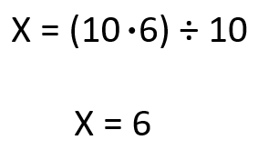

EJEMPLOS REGLA DE 3
¡ Lo mas vital seran las matematicas en tu vida!
La regla de tres o regla de tres simple es una forma de resolver problemas de proporcionalidad entre tres valores
conocidos y una incógnita, estableciendo una relación de proporcionalidad entre todos ellos.
Es decir, lo que se pretende con ella es hallar el cuarto término de una proporción conociendo los otros tres.
Regla de 3
SIMPLE
Colocaremos en una tabla los 3 datos (a los que llamamos “a”, “b” y “c”) y la incógnita, es decir, el dato que queremos averiguar (que llamaremos “x”). Después, aplicaremos la siguiente fórmula:

Para ver un ejemplo, vamos a resolver el mismo problema de proporcionalidad directa que vimos la semana pasada, ahora aplicando la regla de 3 simple:
llegar al hotel nos han dado un mapa con los lugares de interés de la ciudad, y nos han dicho que 5 centímetros del mapa representan 600 metros de la realidad. Hoy queremos ir a un parque que se encuentra a 8 centímetros del hotel en el mapa. ¿A qué distancia del hotel se encuentra este parque?
Vamos a hacer la tabla con los 3 datos y la incógnita (“x”), y hallaremos “x” con la fórmula que acabamos de aprender:
COMPUESTA
La regla de tres compuesta se emplea cuando se relacionan tres o más magnitudes, de modo que a partir de las relaciones establecidas entre las magnitudes conocidas obtenemos la desconocida. Una regla de tres compuesta se compone de varias reglas de tres simples aplicadas sucesivamente. Como entre las magnitudes se pueden establecer relaciones de proporcionalidad directa o inversa, podemos distinguir tres casos de regla de tres compuesta.
Ejemplo de regla de 3 compuesta con las dos proporcionalidades directas
regla de 3 compuesta
Hemos ido a la fuente del pueblo para recoger agua. Sabemos que 5 botellas de agua, de 2 litros cada una, pesan 10 kilos. ¿Cuánto pesan 2 botellas de 3 litros cada una?
Las tres magnitudes que tenemos en el problema son: botellas, litros y kilos. Escribimos la relación entre ellas sabiendo que:
5 botellas, 2 litros, 10 kilos
2 botellas, 3 litros, X kilos
Ahora tenemos que averiguar la relación entre las magnitudes, comparando siempre con la magnitud donde esté la incógnita X.
Comparamos botellas con kilos: Si hay menos botellas entonces pesarán menos. Tienen proporcionalidad directa.
Comparamos litros con kilos: Si hay más litros entonces pesarán más. Tienen proporcionalidad directa.
Ahora, escribimos las relaciones en forma de fracción para poder despejar la incógnita X. La primera fracción es donde está la incógnita (esto no es obligatorio, pero ayuda para después resolverlo). Después, igualamos a la multiplicación de las dos fracciones:
Y resolvemos:
Podemos despejar la X haciendo los productos cruzados:

2 botellas, de 3 litros cada una, pesan 6 kilos.